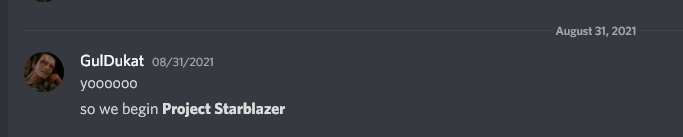
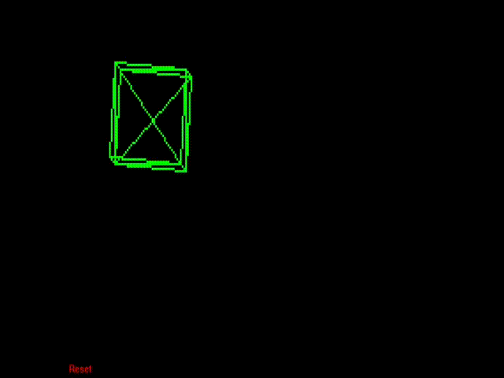

History of Starblazer
The project that became Starblazer can trace its roots back to August 31, 2021. A few days prior was orientation for our high-school computer science class, where the teacher had introduced a semester-long project to create an application. Tasking us to think about it, on the second day of school, I sent a message to my co-programmer:

Intended to be a clone of the 1983 Star Wars vector arcade game, it wasn't long until code began to be written for the game. The initial target was a 286-12 AT-class DOS machine with an 8-bit VGA card. My co-programmer was initially unenthusiastic, wanting to make an NES game instead, but I promised to do most of the code and only rely on him as a consultant, freeing up most of his time for his own side-projects.
By September 9, we had enough code to show off a UI mockup of the game with a scrolling starfield - enough to evoke in the minds of many who saw the prototype, the Star Wars game on which our work was based.
Our intention at the time was to use a 3D wireframe renderer I had written on the Game Boy Advance, porting it over to DOS. The renderer was glacially slow, due to using floating point arithmetic that was unsupported by the ARM7TDMI processor in the GBA, forcing the 16MHz RISC chip to perform software emulation. However, even with fixed-point optimizations (a process that took us into the end of October, due to other work), a spinning cube was still too slow, even on the GBA which was several times more powerful than the AT we were targeting.

Our next idea was sprite scaling, but we also abandoned that for speed considerations. Our proof of concept is here, but we did carry over that code into the intro animation of the title screen zooming into view.
Around this time in early November, the sound code began to take shape (converting NSF tracks from NES games into music suitable for the PC speaker), and we switched to a 2D vector-based renderer on November 17, with an initial proof-of-concept completed at that time. The same day, rotation was added and the enemy art was drawn, seen below.
On November 19, the trench level began to take shape, with the walls being drawn and a single enemy moving around. I decided on using a linked list, though at the time, the sole enemy "bounced off" of the player to go backwards. Later that day, the health bar and laser bar (which would decrease with continuous fire and force you to cool down if you fired for sustained bursts) were added, and by November 20, there were multiple enemies, with the 3D Z-axis projection working properly.
By November 21, there was working collision detection between your lasers and the enemy craft, and on the 23rd, I pulled together a test animation for what was later scrapped, and intended to be used for the end of the game.
An early enemy design that didn't make the cut:
For "Sprint 3", we had the official playable demo of the game, completed November 24. You'll notice the absence of a floor "texture", and no scrolling walls, healing items, or shields, but the core gameplay of exchanging fire with aliens and dodging their attacks is in place by this preliminary playable demo.
Feedback was generally positive, though many lamented the lack of scrolling walls. On November 25, scrolling walls were added.
Due to waning motivation and various bugs, progress cratered on the game, with December seeing only the healing item as a major addition. In January, the credits and a temporary shield were added, completing the DOS version of Starblazer.
Regrettably, the performance targets were not met for the game, and it sat for several months, until a boring summer day in August 2022. My main laptop was being serviced, so I set up an old Dell Latitude D620 (Core 2 Duo T7200) with Windows 7 32-bit, and installed an old copy of Open Watcom. After screwing around for a while, I had a working window with CreateDIBSection that I could write into a framebuffer for, so I decided to do a quick-and-dirty port of Starblazer to Windows using a conservative set of APIs that would work on Windows NT 3.5, Windows 95, or above.
It took only one day - about ten hours of work, on August 9, to complete the demo. Unfortunately, due to limitations of the PlaySound API, sound effects had to be jettisoned (the PC speaker version had them).
The completed version of Starblazer for Windows 95/NT works on everything it claims to. However, on September 5th, the project was revived again. Over the last few days, I had been mulling over the possibility of porting Starblazer to other architectures supported by Windows such as DEC Alpha, MIPS, PowerPC, and Itanium, but thought better of it due to lack of hardware (though check back because I am in contact with someone looking for an Itanium). However, I did decide to use Visual Studio 2005 to compile an AMD64-native version of Starblazer for no practical reason whatsoever.
Bringing the code into VS2005 presented a number of challenges immediately. First of all, I used "new" as a variable name - a big no-no in C++ but fine in C. I could have changed it, but since I also relied on implicit pointer-cast behavior, it was best to just force VS2005 to compile all code as C. Unfortunately, Microsoft's C support at the time was woefully behind the times, being only on C89 despite other vendors having moved to C89, but this proved to not be an issue due to both Borland Turbo C++ (the compiler in which the original game was written) and Open Watcom C/C++ (the compiler in which the Win32 port was written) being C89-only, so my code was compliant on that front.
However, the code immediately crashed in debug mode due to stack corruption. I was aware of issues, which in DOS manifested in spectacular crashes, while they took longer to take effect on Win32, resulting in slowdown over time. However, I could silence the issue I had been unable to track down for months by compiling in release mode, which didn't run the same memory protection checks as debug mode.
The next issue came with the fact that the title screen failed to load properly, the text was mojibake mixed with Japanese characters, and there was no sound.
The issue turned out to be with ANSI vs Unicode text. Windows NT supported both ANSI text, for backwards compatiblity, and 16-bit Unicode text, but Windows 95 supported only ANSI, so Open Watcom used the ANSI versions of all functions for maximum compatibility.
A function like PlaySound is just an alias to PlaySoundA (the sound name is represented by an 8-bit ANSI char string) or PlaySoundW (16-bit unicode wide characters). In Open Watcom, it resolved to PlaySoundA, but resolved to PlaySoundW in VS2005. The solution was simple - use ANSI functions where available and convert to Unicode text where required.
As for the title screen, the issue was with the palette not loading correctly, so I hardcoded that in. This was resolved in later versions - the root cause was that the DOS version ran in 8bpp while the Windows version ran in 16bpp, so a palette lookup was done, converting a char array into a short array. Difficult part was, Open Watcom considered chars to be unsigned by default (a logical behavior), while modern VS considers them signed - normally not an issue, but is an issue when used for array lookup. For example, in palette lookup.